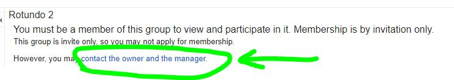
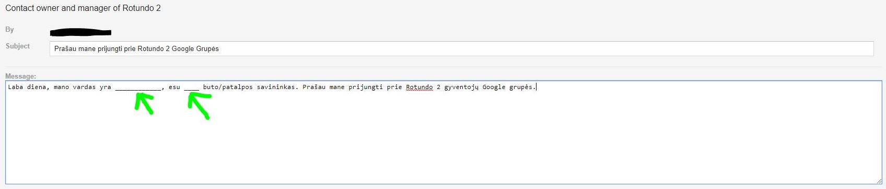

Pradžia
Šiame puslapyje rasite informaciją apie automobilių statymo tvarką ir tai ką ir kaip administratorius gali pakeisti vartų valdymo pulte.
Puslapyje nėra jokių asmeninių duomenų apie administratorius, vartotojus ar telefono numerius. Išskyrus Google grupės adresą.
Sistemos įrašo formatas
370xxxyyyyy:pppp-n-vvvvvv čia:
- 370xxxyyyyy - yra vartotojo telefono numeris.
- pppp - nuo 2 iki 4 simbolių buto/patalpos numeris. Pavyzdžiui b1 arba p2. Jei jo nežinote, nieko tokio, tiesiog aiškiai paaiškinkite kokį butą ar patalpą prašote užregistruoti ar pakeisti.
- n - buto ar patalpos vartotojo (telefono) eilės numeris.
- vvvvvv - automobilio valstybinis numeris.
Pavyzdžiui buto "0" įrašai:
- 37069900123:b0-1-AAA000 - buto "nulis" pirmas vartotojas.
- 37069900234:b0-2-AAA000 - buto "nulis" antras vartotojas.
Apribojimai
Statymo tvarka ir apribojimai aptarti susitikime 2019 kovo 28 d. prieš dabartiniams administratoriams gaunant administravimo teises yra:
- vienam butui ar patalpai registruojame ne daugiau nei du sistemos įrašus su tuo pačiu arba skirtingais automobilių numeriais.
- vienas butas ar patalpa vienu metu kieme stato ne daugiau nei vieną automobilį Apribojimas galioja ir jei sistemoje užregistruoti du skirtingi automobiliai - kieme vienu metu tik vienas automobilis.
- kieme automobilius stato ir sistemoje įrašus registruoja butų ar patalpų savininkai. Savininkai neperleidžia teisės naudoti bendros dalinės nuosavybės teise valdomame kieme esančiomis vietomis tretiesiems asmenims. Savininkai ir registruoti vartotojai naudojasi bendro naudojimo patalpomis ir kiemu tik tiesiogiai su butais ar patalpomis susijusiais tikslais, jų nenuomoja, neperleidžia, neįleidžia į stovėjimo vietas pašalinių asmenų.
Daugiau apie apribojimus ir išimtis skaitykite dažniausiai užduodamų klausimų (DUK) skiltyje.
Ką gali administratorius?
- buto ar patalpos savininko prašymu įregistruoti vieną arba du sistemos įrašus (telefono numerius) su tuo pačiu arba skirtingais valstybiniais numeriais.
- pakeisti arba ištrinti vartotojus, jei butas ar patalpa jau turi du ar daugius sistemos įrašus.
Kaip prašyti atlikti pakeitimą?
- Susipažinkite su numerių registravimo galimybėmis (perskaitykite informaciją šiame puslapyje).
- Rotundo 2 gyventojų grupės (rotundo2@googlegroups.com) skiltyje "Vartų numerių administravimas" parašykite savo prašymą. Prašyme patvirtinkite, kad susipažinote su automobilių statymo tvarka. Jei nesate grupės nariai, žiūrėkite DUK punktą apie tai, kaip jais tapti.
Dažniausiai užduodami klausimai (DUK)
Atsakymai išsiskleidžia paspaudus ant klausimo antraštės.
Kiemo sklypas yra suformuotas ir valstybės išnuomotas DNSB bendrijai. Kieme automobilius gali statyti namo gyventojai, laikydamiesi 2019 kovo 28 d. aptartos tvarkos.
Statymo tvarka ir apribojimai aptarti susitikime 2019 kovo 28 d. prieš dabartiniams administratoriams gaunant administravimo teises yra:
- vienam butui ar patalpai registruojame ne daugiau nei du sistemos įrašus su tuo pačiu arba skirtingais automobilių numeriais.
- vienas butas ar patalpa vienu metu kieme stato ne daugiau nei vieną automobilį Apribojimas galioja ir jei sistemoje užregistruoti du skirtingi automobiliai - kieme vienu metu tik vienas automobilis.
- kieme automobilius stato ir sistemoje įrašus registruoja butų ar patalpų savininkai. Savininkai neperleidžia teisės naudoti bendros dalinės nuosavybės teise valdomame kieme esančiomis vietomis tretiesiems asmenims. Savininkai ir registruoti vartotojai naudojasi bendro naudojimo patalpomis ir kiemu tik tiesiogiai su butais ar patalpomis susijusiais tikslais, jų nenuomoja, neperleidžia, neįleidžia į stovėjimo vietas pašalinių asmenų.
Automobilių vietų skaičius kieme yra ribotas, vietos nepadalintos gyventojams, naudojimosi tvarka nenustatyta. Kieme nėra pakankamai vietų visiems butams ir patalpoms. Dalinant esamas vietas butams, pavyzdžiui, pagal plotą, kiekvienam tektų po mažiau nei 1 vietą. Butų ar patalpų, kurie pagal dydį galėtų pretenduoti į visą pilną vietą nėra.
Visi dalinamės bendru kiemu, todėl laikomės tvarkos ir jame statome ne daugiau nei vieną automobilį vienu metu. Registruojame iki dviejų, nes to norėjo kaimynai, aptariant tvarką įrengus vartus. Bet net užregistravus du telefono/valst. numerius, kieme statome tik po vieną automobilį vienu metu.
Antram ir kitiems automobiliams galite gauti leidimą gyventojams naudotis stovėjimo vietomis gatvėje. Instrukcijos čia
Jeigu svečio, meistro ar kitas pašalinis automobilis kieme yra vienintelis, arba jei papildoma transporto priemonė atvyko laikinai (pvz. kroviniui pakrauti/iškrauti ir neužėmė stovėjimo vietos), greičiausiai niekam nesutrukdėte ir kaimynai neturtės Jums priekaištų. Bet statyti papildomų automobilių, kai vienas jau yra kieme, negalite.
Susitarę su kaimynais galite prašyti išimčių. Administratoriai į jas atsižvelgs gavę daugiau nei pusės butų ir patalpų savininkų ir bendrijos raštišką pritarimą.
Buto ar patalpos numeriai, pažeidus statymo susitarimus, bus ištrinti iš vartų sistemos. Juos atgal įrašysime gavę raštišką daugiau nei pusės butų ir patalpų savininkų bei bendrijos pritarimą.
Paprašykite kaimyno laikytis tvarkos.
Kai nepavyksta susitarti, praneškite apie tai grupėje, jeigu įmanoma, su nuotraukomis ir detalėmis kas ir kaip nesilaiko tvarkos. Jeigu nepavyks susitarti, galėsime svarstyti numerių šalinimą iš sistemos.
Automobilius statykite talpiai, kad liktų vietos kaimynams.
Laikykitės kelių eismo taisyklių: neužstatykite kitų transporto priemonių, išvažiavimo, nestovėkite įjungtu varikliu ir kt.
Tai bendra visų gyventojų nuosavybė. Ją prižiūrime kartu ir, jeigu reikia atlikti kažkokius darbus, kurių negalime atlikti patys, kreipiamės į namo administratorių.
Vartuose naudojame telefono numerį su papildymo kortele. Sąskaitai pasibaigus ir numeriui nustojus galioti vartai neatsidaro arba atsidaro tik po keleto skambučių. Tokiu atveju galite papildyti vartų numerio (to paties, kuriuo skambinate, kad vartai atsidarytų) ir gal problema išsispręs.
Jūs. Biudžeto vartų modulio sąskaitai pildyti bendrai neturime. Tokios paslaugos neperkame ir iš namo administratoriaus dėl papildomos kainos. Todėl kai reikia pildyti vartų numerio sąskaitą, tą patys ir padarote.
Instrukcijos apie tai, kaip pildoma sąskaita čia: www.telia.lt/extra/paslaugos/saskaitos-papildymas
Kokio numerio sąskaitą pildyti? - To paties, kuriuo skambinate, kai norite, kad vartai atsidarytų.
- Susipažinkite su numerių registravimo galimybėmis (perskaitykite informaciją šiame puslapyje).
- Rotundo 2 gyventojų grupės (rotundo2@googlegroups.com) skiltyje "Vartų numerių administravimas" parašykite savo prašymą. Prašyme patvirtinkite, kad susipažinote su automobilių statymo tvarka. Jei nesate grupės nariai, žiūrėkite DUK punktą apie tai, kaip jais tapti.
Pastabos:
- Gavę Jūsų prašymą kaimynai ir bendrijos nariai jį peržiūrės, jeigu reikia prašys papildyti ar pataisyti informaciją (pavyzdžiui įrodyti, kad esate buto ar patalpos savininkas, jeigu esame nepažįstami) ir atliks pakeitimus.
- Bendrija ar administratoriai neturi pareigos atlikti šiuos pakeitimus, jie įprastai atliekami greitai, geriausios valios principais.
- Jeigu vartų telefono numerio sąskaita yra pasibaigusi, pakeitimai neįsigalios tol, kol nepapildysite numerio sąskaitos.
Tai statinis, viešai prieinamas puslapis. Jame nėra jokios jautrios ar asmeninės informacijos. Tokius klausimus galite užduoti grupėje, kurios adresas yra DUK skiltyje.
Taip. Visas puslapio turinys yra pasiekiamas viešai ir keičiamas standartinėmis git priemonėmis (pull request). Arba paaiškinkite kodėl to reikia ir galite perimti puslapio valdymą tiesiogiai įskaitant visą talpyklą (repo).
Jeigu nenorite ar negalite klaidos pataisyti patys, apie ją praneškite grupėje.
Į grupę/forumą galite rašyti per WEB įrankį (https://groups.google.com/forum/#!forum/rotundo2) arba elektroniniu paštu rotundo2@googlegroups.com.
Jei prireiks, bendras instrukcijas, kaip naudotis Google grupėmis/forumais rasite internete, pavyzdžiui čia.
Svarbu! Kad galėtumėte rašyti į grupę, turite būti joje užsiregistravę. Instrukcijos apie tai, kaip užsiregistruoti - kitame DUK punkte.
- atsidarykite grupės WEB paskyrą: https://groups.google.com/forum/#!forum/rotundo2
- joje spauskite ant "contact the owner and the manager" pasirinkimo.
 - paprašykite būti prijungti prie grupės.
 - administratoriui just prijungus prie grupės, galėsite prašyti atlikti pakeitimus vartų modulyje.
Kur kreiptis jeigu turite klausimų?
Jeigu neradote atsakymų į klausimus šiame puslapyje ar DUK skiltyje, kreipkitės į butų/patalpų savininkus. Tai galite padaryti jums patogiausiu būdu. Vienas (neoficialus) būdas yra naudojantis Google grupe.